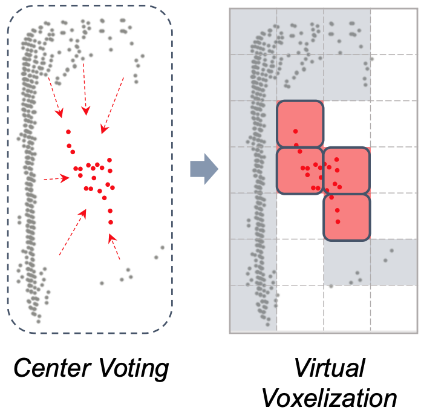

About Me
I am currently a Ph.D. student in CRIPAC, NLPR, Institute of Automation, Chinese Academy of Sciences, supervised by Prof. Zhaoxiang Zhang. I am also an intern at TuSimple supervised by Dr. Naiyan Wang and Dr. Feng Wang from May 2020 to April 2023. I got my bachelor's degree from Xi'an Jiaotong University (XJTU) in 2019, majoring in automation.
My research interests focus on the perception algorithm in autonomous driving scenarios. My representive research lies in a series of algorithms for LiDAR-based fully sparse detection, supporting the super long-range perception and enhancing the driving safety.
Publications
*: Equal Contribution; †: Corresponding Author
 |
Yuqi Wang*, Jiawei He*, Lue Fan*, Hongxin Li*, Yuntao Chen†, Zhaoxiang Zhang†. Code / Project Page Drive-WM is the first multi-view world model for planning in autonomous driving. |
|

|
Lue Fan, Feng Wang, Naiyan Wang, Zhaoxiang Zhang. Code FSDv2 is an improved version of FSD, removing the handcrafted heuristics in FSD. FSDv2 achieves strong performance in Waymo, nuScenes, and Argoverse 2 dataset, and are fully open-sourced! |
 |
Lue Fan, Yuxue Yang, Yiming Mao, Feng Wang, Yuntao Chen, Naiyan Wang, Zhaoxiang Zhang. ICCV, Oral, 2023 Code CTRL is the first open-sourced LiDAR-based 3D object autolabeling system, surpassing the performance of human annotators! |
 |
Yingyan Li, Lue Fan, Yang Liu, Zehao Huang, Yuntao Chen, Naiyan Wang, Zhaoxiang Zhang, Tieniu Tan Code FSF explores multi-modal 3D object detection with fully sparse architecture by seamlessly integrating 2D instance segmentation and 3D instance segmentaion in a unified framework. |
 |
Lue Fan, Yuxue Yang, Feng Wang, Naiyan Wang, Zhaoxiang Zhang TPAMI, 2023 Code FSD++ extends FSD into the multi-frame setting. In addition to the spatial sparsity, FSD++ emphaiszes temporal sparsity. |
|
|
Lue Fan, Feng Wang, Naiyan Wang, Zhaoxiang Zhang NeurIPS, 2022 Code FSD first proposes the concept of LiDAR-based "fully sparse detection", achieving state-of-the-art performance in both conventional benchmark and long-range (>200m) LiDAR detection benchmark. |
 |
Lue Fan, Ziqi Pang, Tianyuan Zhang, Yu-Xiong Wang, Hang Zhao, Feng Wang, Naiyan Wang, Zhaoxiang Zhang CVPR, 2022 Code SST emphasize the small object sizes and sparsity of point clouds. Its sparse transformers enlight new backbones for outdoor LiDAR-based detection. |
 |
Lue Fan*, Xuan Xiong*, Feng Wang, Naiyan Wang, Zhaoxiang Zhang. ICCV, 2021 Code RangeDet greatly narrows the performance gap between range view based LiDAR detection and voxel/BEV based LiDAR detection. |
Contact
- Email: fanlue2019@ia.ac.cn